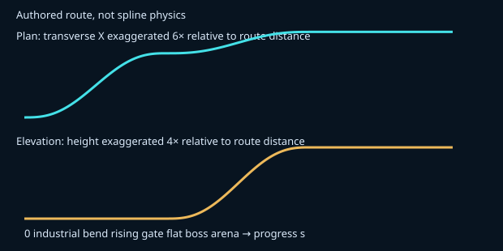

Question: can the route bend and rise while the near combat plane preserves the same readable positions? These are deliberately silent synthetic fixtures, not live game recordings. Read the comparison before revealing its intended interpretation.
The synthetic tick-420 positions do not change. The 12-second presentation survey crosses the industrial sweep, rising gate and flat boss arena. A shared mapper transforms all displayed combat cues. The default near patch is rigid, so the two combat views should look almost identical. Small distant-world changes are intentional; this is not yet a staged-world experience.

Orthographic near-patch Jacobian: exactly 1. Fully curved optional math mode: 0.9677–1.0323. The analytic tilted perspective diagnostic is much worse: 0.6643–1.2149 for curved combat. Do not apply orthographic fairness claims to the live camera.
No audio stream; no live collision, input feel, ray inverse, arbitrary scenery occlusion, Chromebook performance or human accessibility certification. Source/model hashes, timestamps and caveats are in qa.json and README.md. Full CI stopped on unrelated formatting debt.
Recommendation and owner-by-owner integration plan · Machine report · Interactive prototype (Vite required)